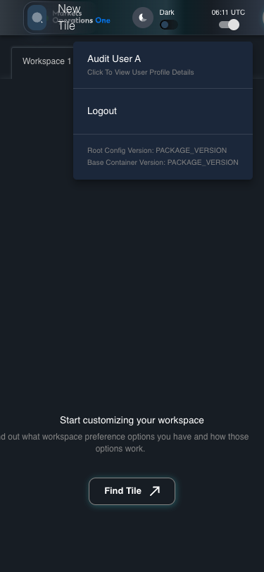

UX-024 responsive shell 375x812
PASS · application/run-050/ux-024-responsive-shell-375x812-f4820c0ed250-attempt-1 · ACTUAL_APPLICATION_LOCAL_SERVICES
Actual React shell. Controlled catalog, user identity, photo failures, and SystemJS tenant. Chromium only. Accessibility and layout outcomes are proposed probes; no approved conformance standard is inferred.
2026-10-22T06:11:46.306Z to 2026-10-22T06:11:48.788Z
Assertions and result · Artifact manifest · Exact run inputs and source hashes
Result SHA-256:e8f11c2c917c1d113bf22494b80c75ea102153c7c8ea40cd9fec11498f7520dbScreenshot capture: CAPTURED. Named frames: 9.
Step screenshot bindings: COMPLETE. 8/8 canonical steps have execution screenshots.
Bindings measure structural coverage only. They do not establish screenshot content quality or relevance.
Screenshot content review: NOT_REVIEWED. Recorded context: 0/9 frames. Identical image bytes: 3 repeated frames. Recorded context does not establish human visual review.
Canonical step timeline
Given USER-A has Home visible at 375 by 812 CSS pixels
Execution: PASSED.1. step-01 Visible state after step 1: Given USER-A has Home visible at 375 by 812 CSS pixels
2026-10-22T06:11:47.974Z · 375×812
Step: /Users/lushevol/code/github/ratan-release-impact/workbench/tasks/ui-test-coverage-20261022/test-cases.md:13025
SHA-256:bdc344ae8072d06b0e0d1b450981fe5d7fc3c966ca7192b27a2be164c68fa101When USER-A clicks the section labelled "New Tile" on the Home page
Execution: PASSED.
2. step-02 Visible state after step 2: When USER-A clicks the section labelled "New Tile" on the Home page
2026-10-22T06:11:48.091Z · 375×812
Step: /Users/lushevol/code/github/ratan-release-impact/workbench/tasks/ui-test-coverage-20261022/test-cases.md:13026
SHA-256:c63fa34a8576747e2777e1443126314da31df552da3e1835b2655a03a3bd9c44Then The section labelled "Tile Options" on the Home page is visible within the viewport or its scroll area
Execution: PASSED.3. step-03 Visible state after step 3: Then The section labelled "Tile Options" on the Home page is visible within the viewport or its scroll area
2026-10-22T06:11:48.141Z · 375×812
Step: /Users/lushevol/code/github/ratan-release-impact/workbench/tasks/ui-test-coverage-20261022/test-cases.md:13027
SHA-256:c63fa34a8576747e2777e1443126314da31df552da3e1835b2655a03a3bd9c44Image bytes match frame 2. An unchanged image can be valid for consecutive assertions. This match does not establish correct step content.
When USER-A presses "Escape" inside the section labelled "Tile Options" on the Home page
Execution: PASSED.4. step-04 Visible state after step 4: When USER-A presses "Escape" inside the section labelled "Tile Options" on the Home page
2026-10-22T06:11:48.206Z · 375×812
Step: /Users/lushevol/code/github/ratan-release-impact/workbench/tasks/ui-test-coverage-20261022/test-cases.md:13028
SHA-256:29b38cb7d02bf533276dea7f6b57437e9280710cfe3a639b0a621537483b2568Then The section labelled "Tile Options" on the Home page is hidden
Execution: PASSED.5. step-05 Visible state after step 5: Then The section labelled "Tile Options" on the Home page is hidden
2026-10-22T06:11:48.424Z · 375×812
Step: /Users/lushevol/code/github/ratan-release-impact/workbench/tasks/ui-test-coverage-20261022/test-cases.md:13029
SHA-256:6c3202f3b94cd4a1fc2ed12dfc1790ca0256716c7ab4dbd805122ca26ac594a1When USER-A clicks the icon button with test ID "${MFE_APP_PREFIX_STYLE}_avatar_IconButton" on the Home page
Execution: PASSED.
6. step-06 Visible state after step 6: When USER-A clicks the icon button with test ID "${MFE_APP_PREFIX_STYLE}_avatar_IconButton" on the Home page
2026-10-22T06:11:48.510Z · 375×812
Step: /Users/lushevol/code/github/ratan-release-impact/workbench/tasks/ui-test-coverage-20261022/test-cases.md:13030
SHA-256:74dea5fd0af7329bd9c147a1018b602521b82d564dddc45f5fd5f0cdbdff722bThen The menu item with test ID "${MFE_APP_PREFIX_STYLE}_avatar_Profile" in the menu with identifier "menu-appbar-avatar" on the Home page is visible without overlap with the menu item labelled "Logout" in the menu with identifier "menu-appbar-avatar" on the Home page
Execution: PASSED.
7. step-07 Visible state after step 7: Then The menu item with test ID "${MFE_APP_PREFIX_STYLE}_avatar_Profile" in the menu with identifier "menu-appbar-avatar" on the Home page is visible without overlap with the menu item labelled "Logout" in the menu with identifier "menu-appbar-avatar" on the Home page
2026-10-22T06:11:48.557Z · 375×812
Step: /Users/lushevol/code/github/ratan-release-impact/workbench/tasks/ui-test-coverage-20261022/test-cases.md:13031
SHA-256:bb2b9ac7206deb1ea42c28a4d103cd4aebfbbeb06b0b0c7405c75d0b8f4021dcAnd The menu item labelled "Logout" in the menu with identifier "menu-appbar-avatar" on the Home page is enabled and reachable within the viewport
Execution: PASSED.8. step-08 Visible state after step 8: And The menu item labelled "Logout" in the menu with identifier "menu-appbar-avatar" on the Home page is enabled and reachable within the viewport
2026-10-22T06:11:48.590Z · 375×812
Step: /Users/lushevol/code/github/ratan-release-impact/workbench/tasks/ui-test-coverage-20261022/test-cases.md:13032
SHA-256:bb2b9ac7206deb1ea42c28a4d103cd4aebfbbeb06b0b0c7405c75d0b8f4021dcImage bytes match frame 7. An unchanged image can be valid for consecutive assertions. This match does not establish correct step content.
Additional named frames

The final visible state after the named test assertions.
2026-10-22T06:11:48.622Z · 375×812Step: Test source: /Users/lushevol/code/github/ratan-release-impact/workbench/e2e/audit-specs/ux-shell.spec.ts:113
SHA-256:
bb2b9ac7206deb1ea42c28a4d103cd4aebfbbeb06b0b0c7405c75d0b8f4021dcImage bytes match frame 8. An unchanged image can be valid for consecutive assertions. This match does not establish correct step content.
Screenshots establish visible state only. Assertions and traces support functional claims.